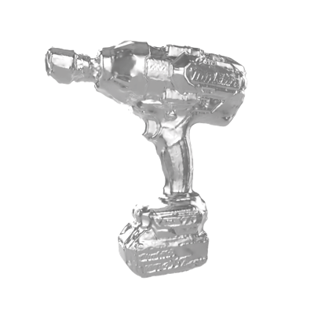

Scroll
Chrome OSB, ABS FDM, aluminium flat bar, enamel paint, Loctite 401
An old idea resurfacing from Fine Art Honours at UNSW. I hated the course, but I couldn't shake post-animalism — a small essay buried inside post-humanism that stayed with me. A prototype exploring that concept before sand casting in aluminium.
MDF, resin, ABS FDM, steel wax, chrome paint, enamel paint
3 heads
Fine art print on aluminium, aluminium angle, pop rivets, epoxy
